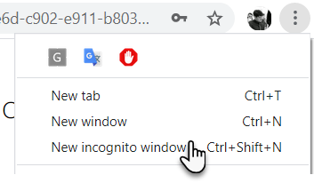
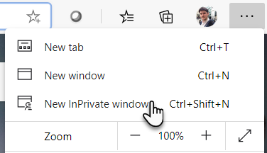
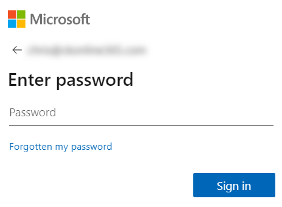
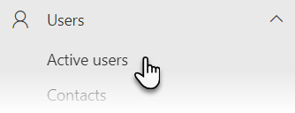

Lab 1 – Getting ready
 In these short exercises, we aim to
give you some content to work with during the course. This will include items such as data sources to populate reports
on Power BI. The content that we provide for you can be kept on your computer to be used in subsequent exercises.
In these short exercises, we aim to
give you some content to work with during the course. This will include items such as data sources to populate reports
on Power BI. The content that we provide for you can be kept on your computer to be used in subsequent exercises.
Additionally, if you completed Lab 0 earlier, you are required to set up some accounts for the
training. These accounts will be used in scenarios where we will be sharing reports and dashboards during the course.
If your instructor has provided you with a Microsoft 365 tenant for this training course, you are not required to
complete this exercise.
Exercise 1 – Sign into Microsoft 365
If you are not already signed into Microsoft 365, please follow these steps to access your tenant (you
may have been provided with credentials by your instructor). If you are already signed in, please skip to exercise 2.
- Open an up to date web browser for example Edge or Chrome (do not use Internet Explorer)
- We recommend opening a private browser, the keyboard shortcut for this is
Ctrl + Shift + N or you
can do the following:
- Chrome – click on the ellipsis (…) at the top-right of the page then
choose New incognito window (you may close the original browser window once the private
browser window opens)

- Edge – click on the ellipsis (…) at the top-right of the page then choose
New InPrivate window (you may close the original browser window once the private browser
window opens)

- In the private web browser window, enter www.office.com into your address bar and press Enter on your
keyboard
- On the sign in page, enter the email address of the account you have been provided with for this
training or the email address of the account you created in Lab 0, then click Next
- On the password screen enter your password for the account you are using then choose Sign in

- You will now be on the Microsoft 365 home screen, if you are prompted to set your location and
time zone, please follow these steps, otherwise the prompt will repeat itself throughout the training (if you are
reviewing these steps as part of lab 7 use this reference to return to page 85)
Exercise 2 – Download Course Files
To gain access to the course files for this training, please download our file pack. It is in a
compressed folder, so please extract the folder contents before attempting to upload the files to OneDrive.
- Using your preferred private web browser window, open a new tab and in the address bar enter:
https://www.combined-knowledge.com/training/ebooks/CKLABS/POWERBI/Labs.zip
- Using the download option that appears, choose to Save to your Downloads folder (or to a location that you prefer)
- Click on File Explorer at the bottom of the screen in the taskbar
- In the left navigation locate and click on Downloads
- Right click on Labs.zip and choose to Extract All
then choose Extract
- Once extracted, feel free to delete the original Labs.zip folder, you now have an extracted
folder with a selection of files used for this course
- Keep this folder open for the next exercise
Exercise 3 – Create accounts for colleagues
If you are on an instructor led course, please skip this exercise. If you are on a self-taught
course and have completed Lab 0 named Setting up Microsoft 365, please proceed with creating accounts for subsequent
exercises.
- In the app launcher
 click on Admin
click on Admin
- Next, in the left navigation click on Users
 then choose Active users
then choose Active users

- Click on + Add a user and complete the form as follows (ignore the domain
option which will be set to your own domain by default)

- At the bottom of the form click Next, then select the tick box for Office 365 E5, click Next > Next > Finish adding which you can click to create the account, then click Close
- Repeat this step for the users Steve Smith, Simon
Gray, Ravinder Sandhu, Caroline Lee and Chris Casingena
- Optionally, create a few more accounts for known colleagues, friends, partners, etc.
- Leave this page open for the next lab